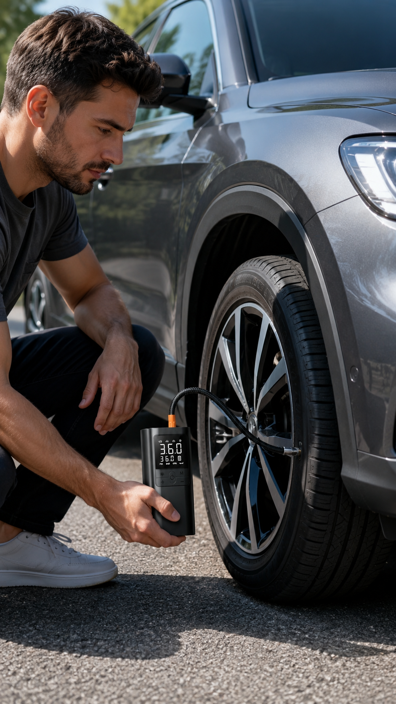
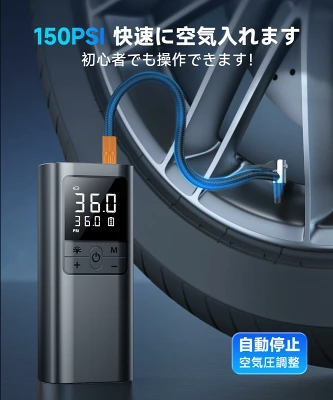
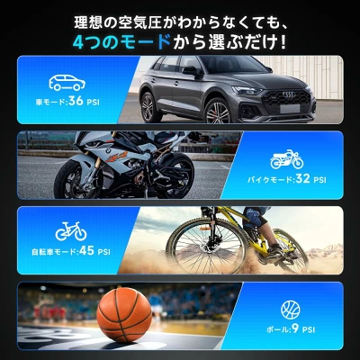
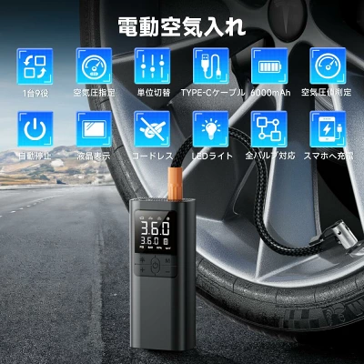
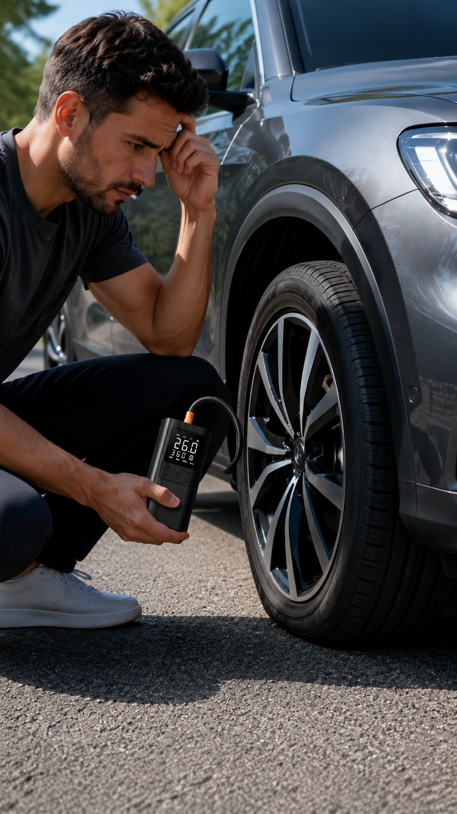
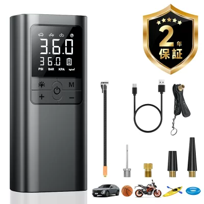
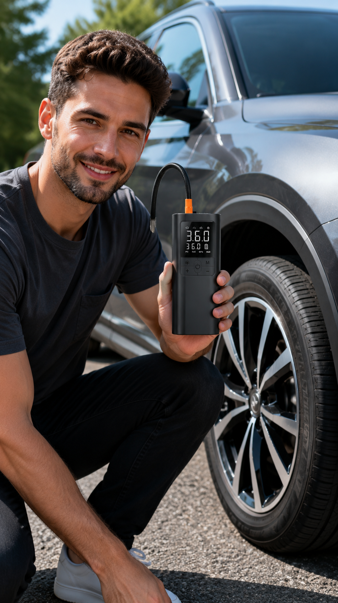

本ページには広告・アフィリエイトリンクが含まれます。この記事では、商品ページの情報と提供画像をもとに特徴を整理しています。運営者が実際に購入・使用したレビューではありません。価格・在庫・レビュー件数はリンク先で最新情報をご確認ください。
出発前に、タイヤの空気圧が気になることはないでしょうか。手動の空気入れだと時間も手間もかかりやすく、外出前にサッと済ませたいときには負担に感じることもあります。
そこで気になるのが、車・バイク・自転車などに使える電動タイプの空気入れです。この記事では、商品ページと提供画像で確認できた範囲の特徴を整理しています。数値や仕様は商品画像に記載された案内をもとにしており、無条件に効果を保証するものではありません。

この商品の主な特徴
商品ページと提供画像では、次のような特徴が案内されています。
- 電動で空気を入れられるコードレスタイプ
- 空気圧を設定して使える（空気圧指定・調整に対応）
- 設定した値で止まる自動停止機能
- 用途に合わせて選べるモード切替
- 充電式で、Type-Cケーブルでの充電に対応
- 液晶表示・LEDライト・付属アダプターなど
商品画像では最大「150PSI」や「6000mAh」といった表記も見られますが、測定条件や適用条件までは確認しづらいため、目安として扱い、購入前にリンク先で最新の仕様をご確認ください。

対応用途
商品画像では、用途に合わせた4つのモードが案内されています。モードごとの目安として、次の空気圧が示されています。
- 車モード：36PSI
- バイクモード：32PSI
- 自転車モード：45PSI
- ボールモード：9PSI
上記はあくまで商品画像に記載された目安です。実際の適正空気圧は、車種・タイヤ・使用条件によって異なります。ご自身の車両やタイヤの指定値を必ず確認してください。

便利そうなポイント
商品画像では、次のような機能がアイコン付きで並んでいます。日常のちょっとした空気圧チェックを想定すると、便利に感じられそうな点です。
- デジタル（液晶）表示で数値を確認しやすい
- 空気圧の単位切替（PSI・BAR・KPA・kg/cm²）
- Type-C充電に対応
- LEDライト搭載
- コードレスで持ち運びやすい
- 設定値での自動停止
- 全バルブ対応・スマホへの充電（モバイルバッテリー機能）の案内
「全バルブ対応」と案内されていても、手持ちのタイヤやバルブ形状に合うかは購入前の確認が安心です。


購入前に確認したいポイント
未購入のため、次の点はリンク先の商品ページで確認しておくと安心です。
- 対応バルブの種類（米式・仏式・英式など）と手持ちのタイヤとの相性
- 最大圧力と、入れたいタイヤの指定空気圧
- 充電方式と充電時間
- バッテリー容量と、1回の充電で使える目安
- 本体のサイズと重量、持ち運びやすさ
- 付属品の内容（アダプター・充電ケーブルなど）
- 保証の有無と適用条件
- 対応車種やタイヤサイズの考え方
- 連続使用時間や発熱など、使用時の注意点

向いていそうな人
- 車での移動が多い人
- バイクや自転車も使う人
- 手軽に持ち運べる空気入れを探している人
- 緊急時・出先での備えとして気になる人
注意点
- 実際の対応範囲や仕様は、購入前に商品ページで確認してください
- 使用前に説明書と、空気圧の適正値・入れ方を確認してください
- 長時間の連続使用は、本体の発熱につながることがあります
- 本体・バッテリーは高温になる場所へ放置せず、充電管理に注意してください
- 安全を確認したうえで使用してください
まとめ
今回の電動空気入れは、空気圧を設定して使え、設定値で自動停止するタイプとして案内されています。車・バイク・自転車・ボールに合わせたモード切替や、Type-C充電・LEDライトなどの便利機能も特徴です。
この記事は未購入商品を、商品ページと提供画像から整理したものです。対応バルブ・最大圧力・付属品・保証・仕様をリンク先で確認してから判断してください。
